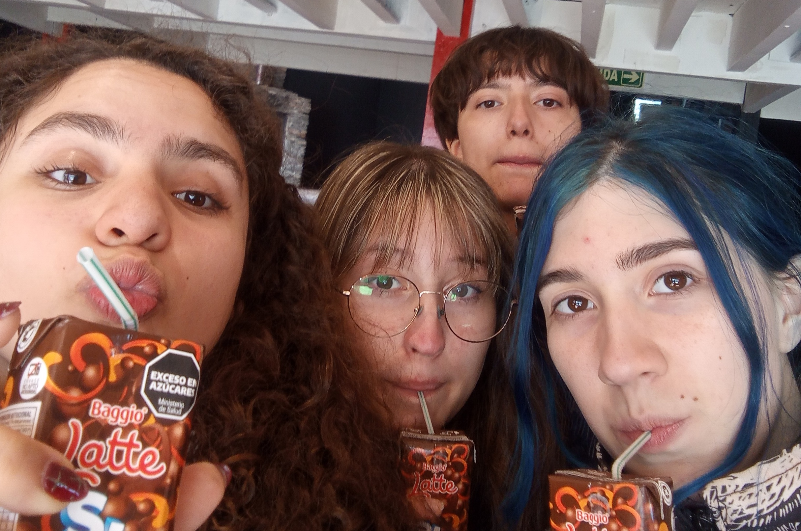
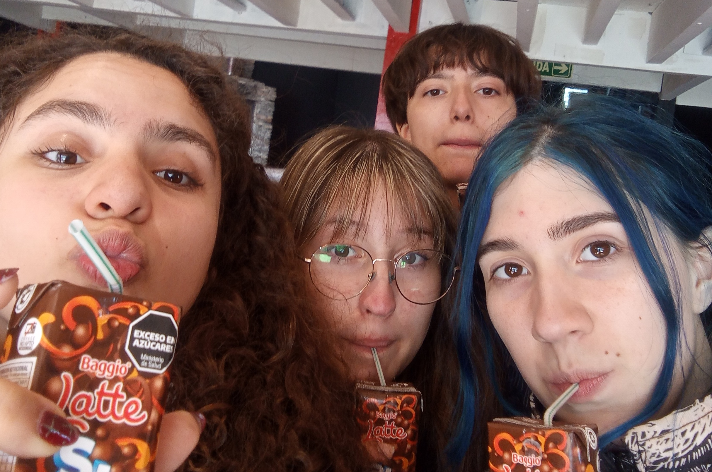
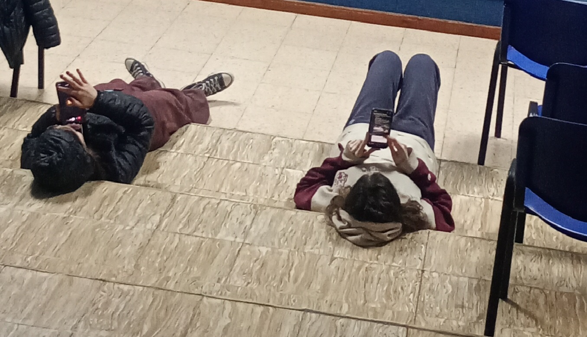
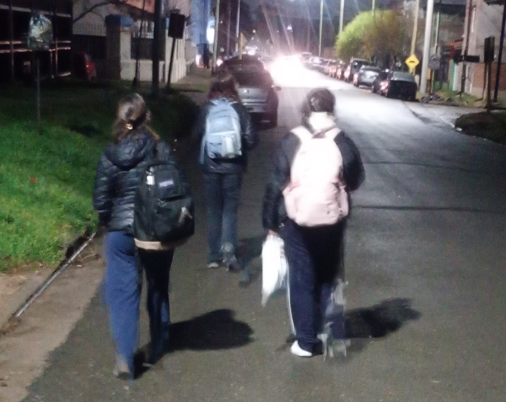
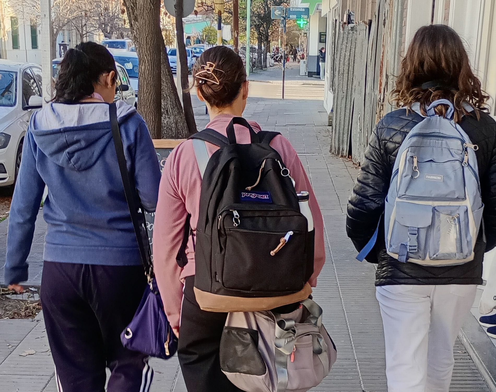
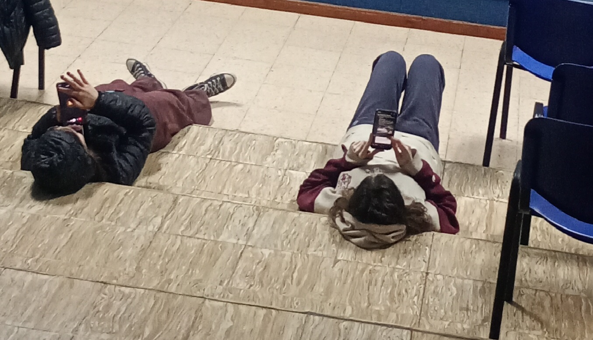
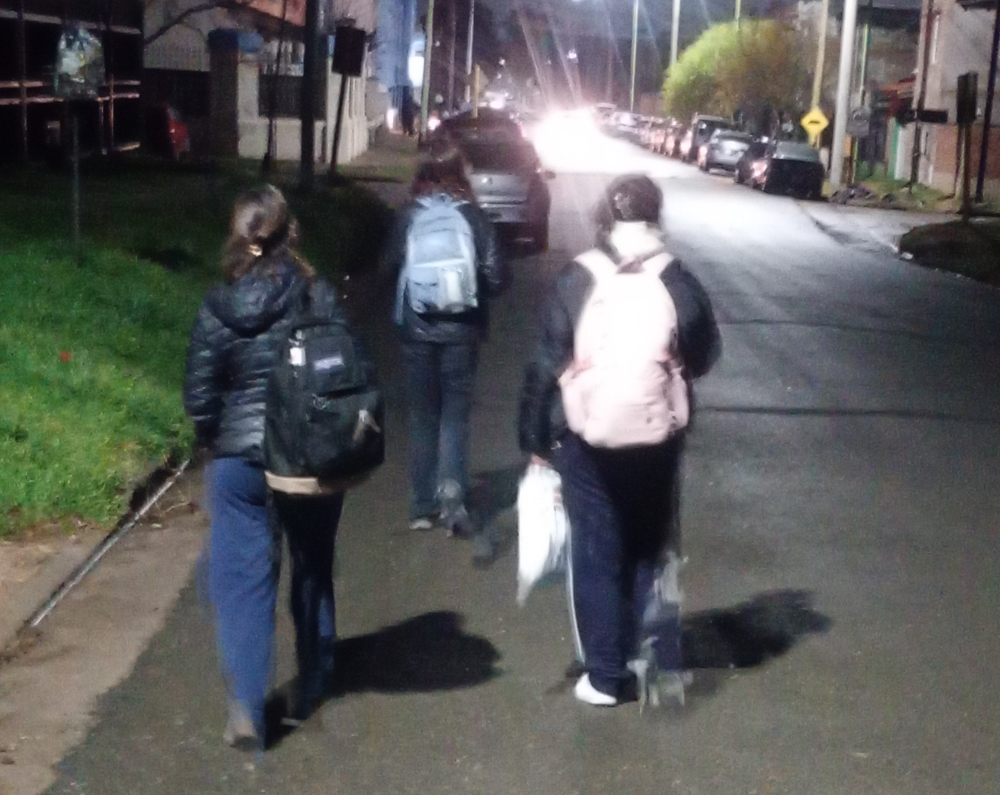
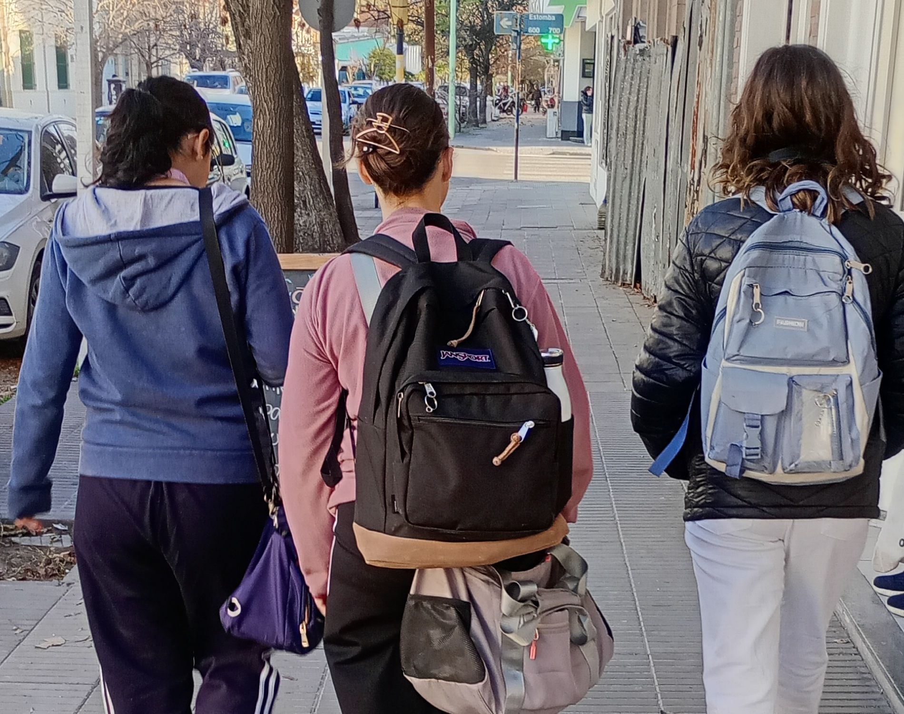

Yo soy Juana, estoy en 6to y tengo 18 años, pero antes tuve 14, estaba en 3er año y tenía que cambiarme de escuela. En la Media 3 me sentía bien, tenía amigas y me gustaba estar ahí, así que pensé que no iba a poder hacerme nuevas amigas acá. Pero al final sí pude, en Ciclo me terminé armando mi grupito facilmente, y en Informática conocí a un montón de gente a la que hoy en día le tengo muchísimo cariño.
El cambio no fue fácil, pero valió completamente la pena, porque ahora amo a mis amigas y a la gente que conocí en el camino.
 

 






Que no es necesario dejar de hacer lo que me gusta para estudiar.
que disfruten mucho de los momentos con sus compañeros y que lleven todas las materias al día así es mucho más fácil
ver a mis amigos todos los días